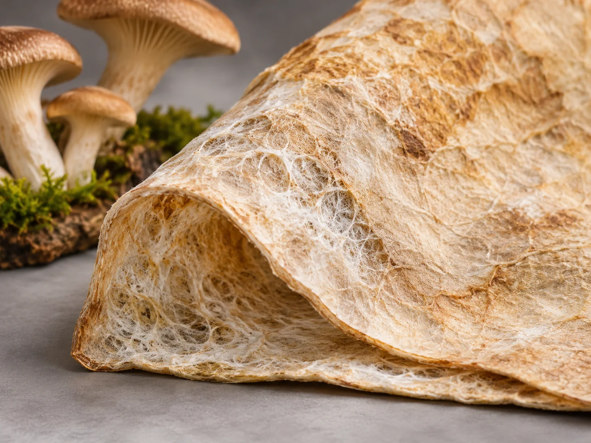
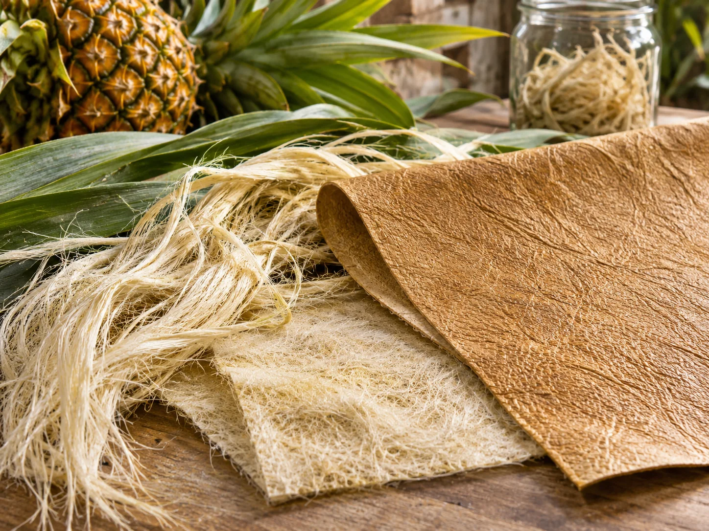

03 / Morgen · Werkstoffe, Technologien und offene Fragen
Morgen: Welche Materialien werden wir künftig verwenden?
Die Zukunft der Lederherstellung wird nicht allein durch die Frage entschieden, ob ein Werkstoff tierischen oder pflanzlichen Ursprungs ist. Entscheidend wird sein, ob Materialien zuverlässig funktionieren, ressourcenschonend produziert werden können, lange halten und am Ende ihrer Nutzung sinnvoll weiterverwendet werden.

Blick nach vornMehr als Lederersatz
Neue Materialien müssen Leder nicht zwingend imitieren. Sie könnten leichter, gezielt elastisch, wasserdurchlässig, widerstandsfähig oder besser reparierbar sein. Manche werden Leder ergänzen, andere es in einzelnen Anwendungen ersetzen. Für wieder andere Anwendungen werden etablierte Werkstoffe vorerst überlegen bleiben.
Die spannende Frage lautet deshalb: Welche Eigenschaften können wir künftig gezielt entwickeln, statt sie lediglich nachzuahmen?
Bereits im EinsatzZum Beispiel PU- und PVC-Kunstleder sowie zahlreiche pflanzlich gegerbte Lederarten.
Im AufbauEinzelne myzelbasierte und reststoffbasierte Materialien, deren Verfügbarkeit und Zusammensetzung je nach Hersteller stark variieren.
ForschungNeue Kollagenwerkstoffe, mikrobiell erzeugte Strukturen und kreislauffähige Verbundsysteme.
01 / Materialien, die wachsen
Myzel: ein Werkstoff aus Pilzgeflechten
Myzel ist das Netzwerk feiner Pilzfäden. Unter kontrollierten Bedingungen kann es auf geeigneten Nährsubstraten wachsen und flächige Strukturen bilden. Je nach Verfahren wird das Material geerntet, entwässert, gepresst, gefärbt und mit weiteren Stoffen behandelt. Daraus können biegsame, lederähnliche Oberflächen entstehen.
Doch das Ausgangsmaterial allein bestimmt noch nicht das Endprodukt. Dichte, Faserverbund, Feuchteempfindlichkeit und Oberflächenbehandlung beeinflussen Reissfestigkeit, Griff und Haltbarkeit. Manche Systeme verwenden zusätzliche Polymere oder textile Träger. Solche Produkte sind dann Verbundwerkstoffe, auch wenn ihr Ausgangsmaterial biologisch gewachsen ist.
Die eigentlichen Herausforderungen
Für einen breiten Einsatz müssen Hersteller nicht nur eine attraktive Oberfläche erzeugen, sondern reproduzierbare Materialeigenschaften sicherstellen. Was im Labor auf einer kleinen Fläche gelingt, muss auch bei grossen Bahnen gleichmässig funktionieren. Hinzu kommen Produktionsdauer, Energie für Klimatisierung und Trocknung, Ausschuss, Kosten sowie die Frage, ob Beschichtungen eine spätere stoffliche Verwertung verhindern.
Zukunftspotenzial: Accessoires, Innenausstattungen und ausgewählte Modeprodukte erscheinen als naheliegende Anwendungsfelder. Für hoch beanspruchte Sohlen oder industrielle Zuganwendungen ist eine Gleichwertigkeit nicht allein aus der Materialbezeichnung ableitbar.
02 / Rohstoffe neu nutzen
Aus Pflanzenresten werden technische Materialien

Bei pflanzenbasierten Alternativen ist es wichtig, zwischen Fasern, Füllstoffen und Bindemitteln zu unterscheiden. Ein Rohstoff kann den Hauptteil eines Materials bilden oder nur einen vergleichsweise kleinen Bestandteil einer Kunststoffbeschichtung ausmachen. Beide Produkte dürfen als pflanzenbasiert beschrieben werden, sind technisch aber kaum vergleichbar.
Reststoffe können sinnvoll genutzt werden, wenn Sammlung, Transport, Aufbereitung und Verarbeitung in einem vernünftigen Verhältnis zum Nutzen stehen. Nicht jeder landwirtschaftliche Reststoff ist tatsächlich ungenutzt: Manche dienen bereits als Futtermittel, Dünger oder Energieträger.
Ananasblätter
Die langen Blattfasern können zu Vliesstoffen verarbeitet werden. Damit daraus ein robustes, biegsames Obermaterial wird, sind je nach Produkt Bindung, Verdichtung und Oberflächenbehandlung erforderlich. Die Faserherkunft allein sagt wenig über den Kunststoffanteil aus.
Apfelreste
Rückstände der Saftverarbeitung können getrocknet und aufbereitet als Bestandteil beschichteter Materialien dienen. Die eigentliche mechanische Festigkeit kann dabei wesentlich von einem textilen Träger oder polymeren Bindemittel abhängen.
Traubenreste
Schalen, Kerne und weitere Nebenprodukte der Weinbereitung können in Materialrezepturen eingehen. Entscheidend sind der Anteil des Reststoffs, die verwendeten Zusatzstoffe und die Beständigkeit des fertigen Verbunds.
Zellulose und weitere Fasern
Zellulose aus unterschiedlichen Quellen lässt sich zu Fasern, Filmen oder Verbundbestandteilen verarbeiten. Besonders interessant sind Verfahren, die möglichst wenige problematische Zusatzstoffe benötigen und sich industriell wiederholen lassen.
Die zentrale Prüfregel: „Pflanzlich“ bedeutet nicht automatisch plastikfrei, kompostierbar oder langlebig. Die vollständige Materialzusammensetzung ist entscheidend.
03 / Biotechnologie
Kollagen aus dem Labor: Kann man Leder neu aufbauen?
Tierisches Leder verdankt viele seiner Eigenschaften dem komplexen Aufbau der Haut: Kollagenfasern sind in mehreren Ebenen miteinander verflochten. Diese Struktur lässt sich nicht einfach durch eine dünne Schicht Kollagen ersetzen. Deshalb erforschen Unternehmen und wissenschaftliche Einrichtungen, wie Kollagen oder kollagenähnliche Proteine biotechnologisch hergestellt und anschliessend zu belastbaren Materialien verarbeitet werden können.
Die Herstellung eines Proteins ist nur der erste Schritt. Danach muss daraus ein Werkstoff mit geeigneter Faserstruktur, ausreichender Festigkeit, Biegsamkeit und Beständigkeit entstehen. Ausserdem muss die Produktion im industriellen Massstab bezahlbar und ressourceneffizient sein. Fermentation, Reinigung, Trocknung und weitere Prozessschritte können erhebliche Energie- und Materialaufwendungen verursachen.
Offene FrageKann ein gezielt aufgebauter Kollagenwerkstoff eines Tages die Eigenschaften einer gewachsenen Tierhaut erreichen oder sogar übertreffen? Dafür braucht es belastbare Prüfungen, nicht nur überzeugende Musterstücke.
04 / Die Gerberei von morgen
Weniger Ressourcen, präzisere Verfahren
Auch wenn tierisches Leder weiterhin verwendet wird, muss seine Herstellung nicht unverändert bleiben. Die grössten Entwicklungsmöglichkeiten liegen nicht in einem einzelnen Wundermittel, sondern in der Verbesserung vieler aufeinanderfolgender Arbeitsschritte: Einweichen, Enthaaren, Entkälken, Beizen, Gerben, Nachgerben, Färben und Zurichten.
Wasser im Kreislauf
Prozesswasser kann in geeigneten Schritten aufbereitet und wiederverwendet werden. Das verlangt eine sorgfältige Kontrolle von Salzgehalt, organischer Belastung und störenden Rückständen. Ein vollständig geschlossener Kreislauf ist technisch nicht für jede Anlage selbstverständlich.
Gerbstoffe gezielt einsetzen
Dosierung, Temperatur, pH-Wert und Bewegung beeinflussen die Aufnahme von Gerbstoffen. Bessere Steuerung kann Verluste verringern. Pflanzliche, synthetische und mineralische Verfahren haben jeweils unterschiedliche Anforderungen und Umweltprofile.
Abwasser und Nebenströme
Organische Belastungen, Salze und eingesetzte Prozesschemikalien müssen je nach Verfahren behandelt werden. Auch feste Rückstände und Schlämme gehören zur Umweltbilanz. Fortschritte entstehen durch Vermeidung, Trennung und Behandlung.
Energie und Digitalisierung
Sensoren, Prozessdaten und automatische Steuerungen können Schwankungen reduzieren. Wärmerückgewinnung und effizientere Trocknung sind weitere Ansatzpunkte. Ob sie wirtschaftlich sind, hängt von der Grösse und Ausstattung des Betriebs ab.
Wichtig: „Chromfrei“ bedeutet nicht automatisch pflanzlich, und „pflanzlich gegerbt“ bedeutet nicht chemikalienfrei. Für eine ökologische Bewertung müssen sämtliche Prozessschritte betrachtet werden.
05 / Technische Anforderungen
Materialien nach Mass statt blosser Lederoptik
Neue Werkstoffe müssen nicht überall dieselben Eigenschaften besitzen. Ein biegsames Schuhoberteil stellt andere Anforderungen als eine Sohle, ein Möbelbezug oder eine technische Dichtung. Gerade darin könnte ein Vorteil neuer Materialtechnologien liegen: Schichten, Faserorientierung und Oberflächen können gezielt auf eine Anwendung abgestimmt werden.
Laborwerte müssen dabei mit realen Nutzungsbedingungen zusammenpassen. Ein Material kann bei einem einzelnen Zugversuch gut abschneiden und dennoch durch wiederholtes Knicken, Feuchtigkeit oder Alterung früh versagen.
06 / Kreislaufwirtschaft
Das Lebensende beginnt beim Entwurf
Ein Werkstoff ist nicht allein deshalb nachhaltig, weil sein Rohstoff nachwächst. Ebenso wichtig ist, wie lange ein Produkt genutzt werden kann und was danach mit ihm geschieht. Eine kurze Nutzungsdauer kann mögliche Vorteile der Rohstoffgewinnung wieder aufzehren. Umgekehrt sind auch langlebige Produkte nicht automatisch ökologisch überlegen, wenn Herstellung oder Entsorgung hohe Belastungen verursachen.
Länger nutzen
Robuste Konstruktion, austauschbare Teile und Pflegehinweise können die Nutzungsdauer verlängern. Die Reparierbarkeit sollte schon bei Materialwahl und Produktdesign berücksichtigt werden.
Trennbar konstruieren
Viele lederähnliche Materialien bestehen aus mehreren fest verbundenen Schichten. Das erschwert das Recycling. Zukünftige Systeme könnten gezielt auf trennbare Verbindungen oder gut verwertbare Materialgruppen setzen.
Richtig entsorgen
Biobasiert, biologisch abbaubar und industriell kompostierbar sind unterschiedliche Eigenschaften. Entscheidend ist, unter welchen Bedingungen ein Material tatsächlich abgebaut werden kann und ob diese Entsorgungswege verfügbar sind.
Gesamtbilanz prüfen
Eine belastbare Ökobilanz berücksichtigt Rohstoffe, Verarbeitung, Transporte, Nutzung und Lebensende. Aussagen über ein einzelnes Produkt dürfen nicht ohne Weiteres auf eine ganze Materialklasse übertragen werden.
07 / Vom Prototyp zum Alltag
Was muss geschehen, damit eine Idee den Markt erreicht?
Ein überzeugendes Labormuster ist noch keine industrielle Lösung. Neue Materialien müssen in gleichbleibender Qualität hergestellt werden, bei wechselnden Temperaturen und Feuchtigkeiten funktionieren und die Anforderungen der späteren Anwender erfüllen. Hinzu kommen Lieferfähigkeit, Preis, Reparatur, Prüfstandards und nachvollziehbare Angaben zur Zusammensetzung.
- Material entwickeln: Rezeptur und Eigenschaften im kleinen Massstab untersuchen.
- Prüfen: Reissfestigkeit, Abrieb, Alterung und weitere anwendungsspezifische Merkmale testen.
- Skalieren: Von einzelnen Mustern zu reproduzierbaren Flächen und industriellen Mengen gelangen.
- Einsetzen: Produkte unter realen Bedingungen erproben und Rückmeldungen auswerten.
- Bilanzieren: Ressourcenverbrauch und Entsorgungswege unabhängig untersuchen.
Unsere Leitfrage
Was wird sich wirklich durchsetzen?
Wahrscheinlich nicht ein einziges Material für alle Zwecke. Vielmehr könnten traditionelle Leder, weiterentwickelte Kunststoffe, pflanzliche Verbunde, Myzelwerkstoffe und biotechnologische Materialien nebeneinander bestehen – jeweils dort, wo sie technisch und ökologisch überzeugen.
Die Zukunft gehört nicht automatisch dem natürlichsten oder neuesten Material, sondern dem Werkstoff, der für seinen Einsatz am sinnvollsten hergestellt, verwendet, gepflegt und weiterverwertet werden kann.
Einordnung und Quellen
Was ist gesichert, was bleibt offen?
Diese Seite beschreibt technologische Entwicklungsrichtungen. Sie ist keine Produktzulassung, keine Kaufempfehlung und keine vergleichende Ökobilanz. Insbesondere bei neuartigen Werkstoffen unterscheiden sich Zusammensetzung, Marktreife und Umweltprofil von Hersteller zu Hersteller. Die Bilder sind gestaltete Illustrationen und zeigen keine nachgewiesenen Produkteigenschaften.
Für eine vertiefte Überprüfung sind insbesondere die folgenden fachlichen Anlaufstellen geeignet:
Die genannten Institutionen dienen als Rechercheeinstieg; sie sind keine Einzelnachweise für sämtliche Aussagen auf dieser Seite. Herstellerbezogene Leistungs- und Umweltangaben müssen anhand konkreter Datenblätter, Prüfberichte und Studien geprüft werden.
Alternative Trägermaterialien
Myzel, Zellulose und Pflanzenfasern eröffnen neue Möglichkeiten. Bindemittel, Trägerschichten und Oberflächenbeschichtungen gehören in jede Materialbeschreibung.
Nach welchen Kriterien vergleichen wir neue Materialien?
Haltbarkeit, Reparatur, Wasser- und Energieeinsatz, Chemikalien, Kunststoffanteil, Emissionen und Entsorgung sollten gemeinsam betrachtet werden.